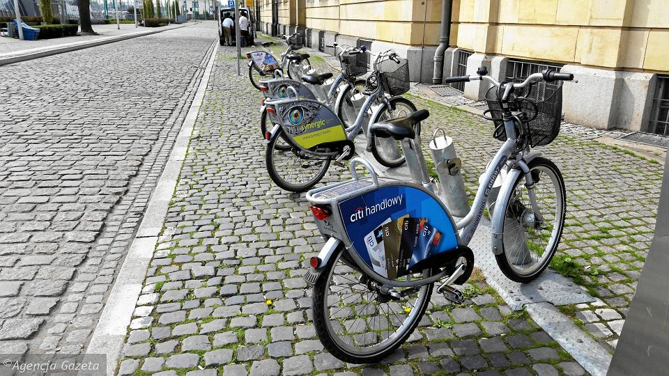
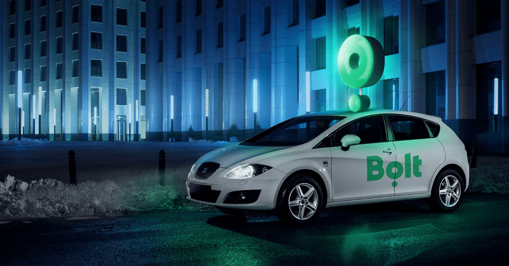

How to move in Łódź?
JakdojadeIf you’re heading to Poland for the first time and a little concerned about how to get from Point A to Point B on public transport then you need to down a free app, jakdojade.pl. The jakdojade.pl app is an awesome public transport app which provides detailed directions for the majority of cities in Poland. It is so easy to use that it became the one app that we relied upon daily to get us to the next destination.
NextBikeBicycle users are normally obtained through a subscription system, where each bike is locked to either itself or to a rental station. If using a stand-alone lock, the bike is rented via a mobile phone call or the mobile app, which provides the locking code. The bikes can be returned via app, hotline, terminal or board computer. There are cities with a flex zone allowing users to return the bike anywhere within a defined area for a small additional fee.
BoltBolt operates their app, which enables people to hail rides from their smartphones. The application is available for Android, iOS and Windows Phone. Riders must choose a payment method: cash, credit card or mobile carrier billing before they can use the service. The customer requests a ride and confirms their pick-up location. Once the driver accepts the trip, the customer will be able to see the driver's name and car details. After the ride is completed both driver and the rider can rate each other.
FreeNowThe Free Now app uses mobile and GPS technology to match taxi drivers with passengers based on availability and proximity, and requires a valid phone number and valid form of payment (debit or credit card, Apple Pay, Google Wallet or PayPal) to operate. The Free Now app is compatible with both iOS and Android mobile devices, and works with licensed taxis, including black cabs in the UK. Depending on location, customers can order a taxi, E-scooter or car through the app.
UberUber Technologies, Inc., commonly known as Uber, is an American multinational ride-hailing company offering services that include peer-to-peer ridesharing, ride service hailing, food delivery, and a micromobility system with electric bikes and scooters. The company is based in San Francisco and has operations in over 785 metropolitan areas worldwide. Its platforms can be accessed via its websites and mobile apps.